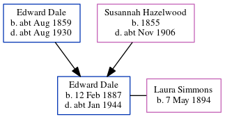

Hilda Mary Cook (née Deal) 1906 - c1981
[ Home ] | [ Calendar ] | [ Surnames Index ] | [ Errors ] | [ Family History ]A drapery shop's assistant and the youngest of 3 children of Austin Deal (a cemetery caretaker) and Emily Kenton, Hilda Deal, the second cousin once-removed on the father's side of Nigel Horne, was born in Chartham, Kent, England on 28 Sept 19061,2,3 and baptised there at St Mary's Church, Church Lane on 28 Oct 1906. She married Thomas Cook in Hammersmith, London, England around Nov 19444.
During her life, she was living at Kent County Lunatic Asylum in Chartham on 2 Apr 19115, at Railway Tavern in Chartham in 1915, and at Cemetery Lodge in Chartham on 29 Sept 19391 (when she was living with her).
She died c. Aug 1981 in Canterbury, Kent, England3.
Parents
- Austin Alfred was born on 23 Dec 1876
- Emily Ellen was born on 16 Mar 1875
Citations
- 1939 Register - Findmypast (was recorded at this address)
- England & Wales births 1837-2006 - Findmypast
- England & Wales deaths 1837-2007 - Findmypast
- England & Wales Marriages 1837-2005 - Findmypast
- 1911 Census for England & Wales - Findmypast (was age 4 and the daughter of the head of the household)
Media
England & Wales births 1837-2006 - BMD/B/1906/4/AZ/000152/136
1911 Census for England & Wales - GBC/1911/RG14/04308/0064/11
1939 Register Transcription - TNA-R39-1803-1803E-026-28
England & Wales deaths 1837-2007 - BMD/D/1981/3/AZ/000194/119
England & Wales marriages 1837-2005 - BMD/M/1944/4/AZ/000277/115
England Births & Baptisms 1538-1975 - R_885425854
Kent Baptisms - GBPRS/CANT/B/96195480
Family Tree
Map
Generated by ged2site. Last updated on Jul 3, 2024
Known Issues
Residence record for 1915 contains no citation
Date of residence (1915) differs from father's in same year (Dec 1915)
1915: Not living with either parent in childhood when aged 8